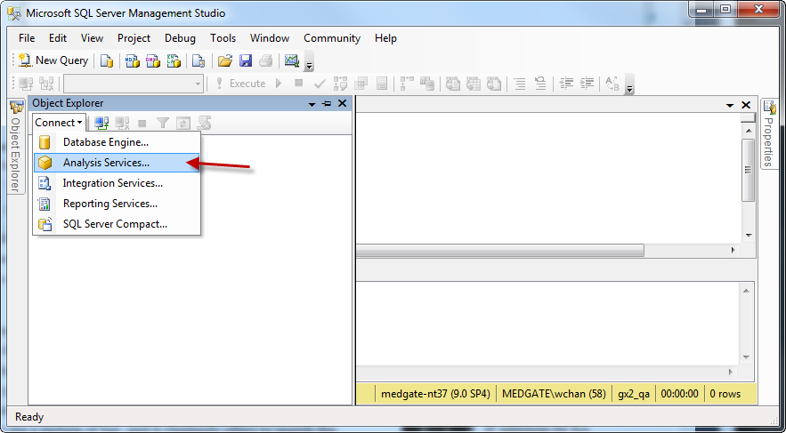
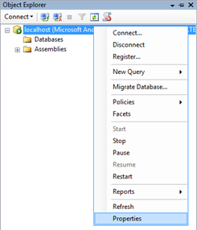

7.2 Permitting communication between IIS and the Analysis Service
After installing SSAS on the server, with the same administrator account on the same server, open SSMS. In the Object Explorer, select Connect > Analysis Services.

Enter “localhost” for the server name, and then press connect. You should now be connected to the Analysis Service. Now right-click localhost and select Properties.

Click Security at the left, and then click Add.
Enter the anonymous internet user account that you wrote down earlier. It should be IUSR_<computername>, by default. You have now permitted IIS to communicate with the Analysis Service.